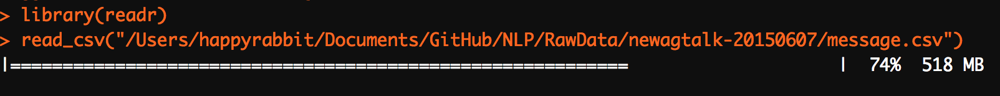

5.1 Read and write data
5.1.1 readr
You must be familiar with read.csv(), read.table() and write.csv() in base R. Here we will introduce a more efficient package from RStudio in 2015 for reading and writing data: readr package. The corresponding functions are read_csv(), read_table() and write_csv(). The commands look quite similar, but readr is different in the following respects:
It is 10x faster. The trick is that
readruses C++ to process the data quickly.It doesn’t change the column names. The names can start with a number and “
.” will not be substituted to “_”. For example:library(readr) read_csv("2015,2016,2017 1,2,3 4,5,6")readrfunctions do not convert strings to factors by default, are able to parse dates and times and can automatically determine the data types in each column.The killing character, in my opinion, is that
readrprovides progress bar. What makes you feel worse than waiting is not knowing how long you have to wait.

The major functions of readr is to turn flat files into data frames:
read_csv(): reads comma delimited filesread_csv2(): reads semicolon separated files (common in countries where,is used as the decimal place)read_tsv(): reads tab delimited filesread_delim(): reads in files with any delimiterread_fwf(): reads fixed width files. You can specify fields either by their widths withfwf_widths()or their position withfwf_positions()
read_table(): reads a common variation of fixed width files where columns are separated by white spaceread_log(): reads Apache style log files
The good thing is that those functions have similar syntax. Once you learn one, the others become easy. Here we will focus on read_csv().
The most important information for read_csv() is the path to your data:
library(readr)
sim.dat <- read_csv("https://raw.githubusercontent.com/happyrabbit/DataScientistR/master/Data/SegData.csv ")
head(sim.dat)The function reads the file to R as a tibble. You can consider tibble as next iteration of the data frame. They are different with data frame for the following aspects:
- It never changes an input’s type (i.e., no more
stringsAsFactors = FALSE!) - It never adjusts the names of variables
- It has a refined print method that shows only the first 10 rows and all the columns that fit on the screen. You can also control the default print behavior by setting options.
Refer to http://r4ds.had.co.nz/tibbles.html for more information about ‘tibble’.
When you run read_csv() it prints out a column specification that gives the name and type of each column. To better understanding how readr works, it is helpful to type in some baby data set and check the results:
dat=read_csv("2015,2016,2017
100,200,300
canola,soybean,corn")
print(dat)You can also add comments on the top and tell R to skip those lines:
dat=read_csv("# I will never let you know that
# my favorite food is carrot
Date,Food,Mood
Monday,carrot,happy
Tuesday,carrot,happy
Wednesday,carrot,happy
Thursday,carrot,happy
Friday,carrot,happy
Saturday,carrot,extremely happy
Sunday,carrot,extremely happy", skip = 2)
print(dat)If you don’t have column names, set col_names = FALSE then R will assign names “X1”,“X2”… to the columns:
dat=read_csv("Saturday,carrot,extremely happy
Sunday,carrot,extremely happy", col_names=FALSE)
print(dat)You can also pass col_names a character vector which will be used as the column names. Try to replace col_names=FALSE with col_names=c("Date","Food","Mood") and see what happen.
As mentioned before, you can use read_csv2() to read semicolon separated files:
dat=read_csv2("Saturday; carrot; extremely happy \n Sunday; carrot; extremely happy", col_names=FALSE)
print(dat)Here “\n” is a convenient shortcut for adding a new line.
You can use read_tsv() to read tab delimited files：
dat=read_tsv("every\tman\tis\ta\tpoet\twhen\the\tis\tin\tlove\n", col_names = FALSE)
print(dat)Or more generally, you can use read_delim() and assign separating character：
dat=read_delim("THE|UNBEARABLE|RANDOMNESS|OF|LIFE\n", delim = "|", col_names = FALSE)
print(dat)Another situation you will often run into is the missing value. In marketing survey, people like to use “99” to represent missing. You can tell R to set all observation with value “99” as missing when you read the data:
dat=read_csv("Q1,Q2,Q3
5, 4,99",na="99")
print(dat)For writing data back to disk, you can use write_csv() and write_tsv(). The following two characters of the two functions increase the chances of the output file being read back in correctly:
- Encode strings in UTF-8
- Save dates and date-times in ISO8601 format so they are easily parsed elsewhere
For example:
write_csv(sim.dat, "sim_dat.csv")For other data types, you can use the following packages:
Haven: SPSS, Stata and SAS dataReadxlandxlsx: excel data(.xls and .xlsx)DBI: given data base, such as RMySQL, RSQLite and RPostgreSQL, read data directly from the database using SQL
Some other useful materials:
- For getting data from the internet, you can refer to the book “XML and Web Technologies for Data Sciences with R”.
- R data import/export manual
riopackage：https://github.com/leeper/rio
5.1.2 data.table— enhanced data.frame
What is data.table? It is an R package that provides an enhanced version of data.frame. The most used object in R is data frame. Before we move on, let’s briefly review some basic characters and manipulations of data.frame:
- It is a set of rows and columns.
- Each row is of the same length and data type
- Every column is of the same length but can be of differing data types
- It has characteristics of both a matrix and a list
- It uses
[]to subset data
We will use the clothes customer data to illustrate. There are two dimensions in []. The first one indicates the row and second one indicates column. It uses a comma to separate them.
# read data
sim.dat<-readr::read_csv("https://raw.githubusercontent.com/happyrabbit/DataScientistR/master/Data/SegData.csv")
# subset the first two rows
sim.dat[1:2,]
# subset the first two rows and column 3 and 5
sim.dat[1:2,c(3,5)]
# get all rows with age>70
sim.dat[sim.dat$age>70,]
# get rows with age> 60 and gender is Male
# select column 3 and 4
sim.dat[sim.dat$age>68 & sim.dat$gender == "Male", 3:4]Remember that there are usually different ways to conduct the same manipulation. For example, the following code presents three ways to calculate an average number of online transactions for male and female:
tapply(sim.dat$online_trans, sim.dat$gender, mean )
aggregate(online_trans ~ gender, data = sim.dat, mean)
library(dplyr)
sim.dat%>%
group_by(gender)%>%
summarise(Avg_online_trans=mean(online_trans))There is no gold standard to choose a specific function to manipulate data. The goal is to solve the real problem, not the tool itself. So just use whatever tool that is convenient for you.
The way to use [] is straightforward. But the manipulations are limited. If you need more complicated data reshaping or aggregation, there are other packages to use such as dplyr, reshape2, tidyr etc. But the usage of those packages are not as straightforward as []. You often need to change functions. Keeping related operations together, such as subset, group, update, join etc, will allow for:
- concise, consistent and readable syntax irrespective of the set of operations you would like to perform to achieve your end goal
- performing data manipulation fluidly without the cognitive burden of having to change among different functions
- by knowing precisely the data required for each operation, you can automatically optimize operations effectively
data.table is the package for that. If you are not familiar with other data manipulating packages and are interested in reducing programming time tremendously, then this package is for you.
Other than extending the function of [], data.table has the following advantages:
Offers fast import, subset, grouping, update, and joins for large data files It is easy to turn data frame to data table Can behave just like a data frame
You need to install and load the package:
# If you haven't install it, use the code to instal
# install.packages("data.table")
# load packagw
library(data.table)Use data.table() to covert the existing data frame sim.dat to data table:
dt <- data.table(sim.dat)
class(dt)Calculate mean for counts of online transactions:
dt[, mean(online_trans)]You can’t do the same thing using data frame:
sim.dat[,mean(online_trans)]Error in mean(online_trans) : object 'online_trans' not foundIf you want to calculate mean by group as before, set “by =” argument:
dt[ , mean(online_trans), by = gender]You can group by more than one variables. For example, group by “gender” and “house”:
dt[ , mean(online_trans), by = .(gender, house)]Assign column names for aggregated variables:
dt[ , .(avg = mean(online_trans)), by = .(gender, house)]data.table can accomplish all operations that aggregate() and tapply()can do for data frame.
- General setting of
data.table
Different from data frame, there are three arguments for data table:
It is analogous to SQL. You don’t have to know SQL to learn data table. But experience with SQL will help you understand data table. In SQL, you select column j (use command SELECT) for row i (using command WHERE). GROUP BY in SQL will assign the variable to group the observations.
Let’s review our previous code:
dt[ , mean(online_trans), by = gender]The code above is equal to the following SQL：
SELECT gender, avg(online_trans) FROM sim.dat GROUP BY genderR code:
dt[ , .(avg = mean(online_trans)), by = .(gender, house)]is equal to SQL：
SELECT gender, house, avg(online_trans) AS avg FROM sim.dat GROUP BY gender, houseR code：
dt[ age < 40, .(avg = mean(online_trans)), by = .(gender, house)]is equal to SQL：
SELECT gender, house, avg(online_trans) AS avg FROM sim.dat WHERE age < 40 GROUP BY gender, houseYou can see the analogy between data.table and SQL. Now let’s focus on operations in data table.
- select row
# select rows with age<20 and income > 80000
dt[age < 20 & income > 80000]
# select the first two rows
dt[1:2]- select column
Selecting columns in data.table don’t need $:
# select column “age” but return it as a vector
# the argument for row is empty so the result will return all observations
ans <- dt[, age]
head(ans)To return data.table object, put column names in list():
# Select age and online_exp columns and return as a data.table instead
ans <- dt[, list(age, online_exp)]
head(ans)Or you can also put column names in .():
ans <- dt[, .(age, online_exp)]
# head(ans)To select all columns from “age” to “income”:
ans <- dt[, age:income, with = FALSE]
head(ans,2)Delete columns using - or !:
# delete columns from age to online_exp
ans <- dt[, -(age:online_exp), with = FALSE]
ans <- dt[, !(age:online_exp), with = FALSE]- tabulation
In data table. .N means to count。
# row count
dt[, .N] If you assign the group variable, then it will count by groups:
# counts by gender
dt[, .N, by= gender]
# for those younger than 30, count by gender
dt[age < 30, .(count=.N), by= gender] Order table:
# get records with the highest 5 online expense:
head(dt[order(-online_exp)],5) Since data table keep some characters of data frame, they share some operations:
dt[order(-online_exp)][1:5]You can also order the table by more than one variable. The following code will order the table by gender, then order within gender by online_exp:
dt[order(gender, -online_exp)][1:5]- Use
fread()to import dat
Other than read.csv in base R, we have introduced ‘read_csv’ in ‘readr’. read_csv is much faster and will provide progress bar which makes user feel much better (at least make me feel better). fread() in data.table further increase the efficiency of reading data. The following are three examples of reading the same data file topic.csv. The file includes text data scraped from an agriculture forum with 209670 rows and 6 columns:
system.time(topic<-read.csv("https://raw.githubusercontent.com/happyrabbit/DataScientistR/master/Data/topic.csv")) user system elapsed
4.313 0.027 4.340system.time(topic<-readr::read_csv("https://raw.githubusercontent.com/happyrabbit/DataScientistR/master/Data/topic.csv")) user system elapsed
0.267 0.008 0.274 system.time(topic<-data.table::fread("https://raw.githubusercontent.com/happyrabbit/DataScientistR/master/Data/topic.csv")) user system elapsed
0.217 0.005 0.221 It is clear that read_csv() is much faster than read.csv(). fread() is a little faster than read_csv(). As the size increasing, the difference will become for significant. Note that fread() will read file as data.table by default.